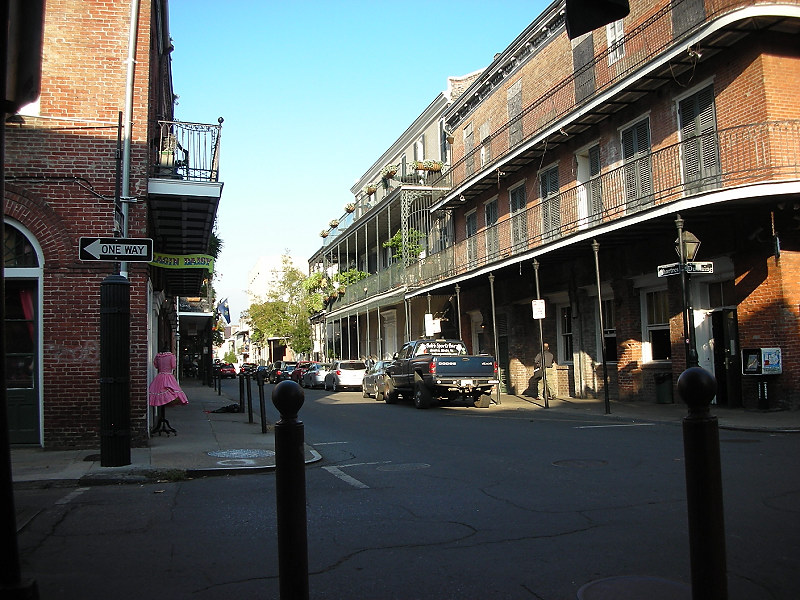

Johnnie and Oberta Baker's Photo Album Gallery Previous Next
|

Many roads in the French Quarter are blocked with iron posts. This allows large crowds to not be crowded on the small sidewalks. The road surface was great for my mobility scooter as it was generally smoother than the sidewalks. |